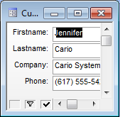

Ad-Hoc Browse
Alpha Anywhere makes the previously optional Ad-Hoc Browse feature standard. Ad-Hoc Browse allows you to quickly open a Browse (or Form) view of a Table or Set, showing only selected fields. This feature allows you to quickly find, edit, or add field values without going through the process of creating a new browse or form.
The Ad Hoc Browse selection appears on the right-click menu after you select a Table and Set in the Control Panel.
After clicking the Ad Hoc Browse command, the Ad-Hoc Browse dialog box appears with all of the fields in the current Table or Set. Use the >, <, >>, and << buttons to select and de-select fields to display.
By clicking on the Form icon you can display the Ad-Hoc Form dialog.
Select the fields that you want. You can double click on a field name, or click one of the selection buttons. In the case of a Set, selecting the blue table header will select all of the fields in that table.
If you have many fields in your Table or Set, sorting them will help you find them quickly. You can click the Ascending, Descending or Unsorted buttons in the bottom left.
You can optionally apply a Filter and or Order so that only selected records are shown when the Ad-Hoc view is opened. (If you do not specify the filter and or order now, you can filter the view once it has been opened).
If you click the Filter icon, the Filter/Order Builder opens up.
After optionally specifying the filter/order, click the OK button. The following is a sample ad hoc browse.
This is the equivalent ad hoc form.

After you close the Ad-Hoc View it will not appear in the list or Forms or Browse in the Control Panel. It is just a temporary Layout that disappears when you are done using it. If you decide that you want to keep the Ad-Hoc view permanently, just click the Design icon on the toolbar and then select File > Save As... to save the View with a name of your choice.
The ADHOCVIEW() function displays the Ad Hoc Browse dialog box.
See Also